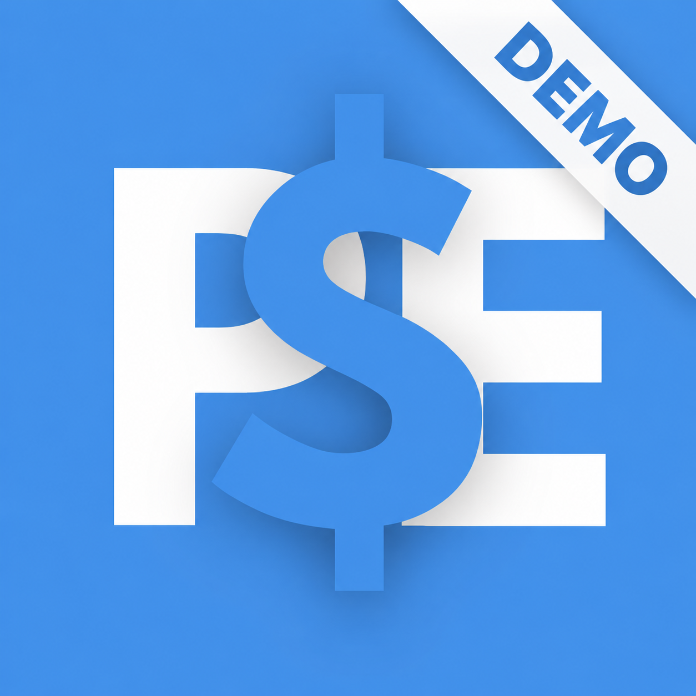

Para probar

PE
Demo
Una versión de prueba para conocer la experiencia, explorar la dinámica y ver cómo funciona una simulación.
- ✓ Versión de demostración
- ✓ Ideal para probar el concepto
- ✓ Instalación independiente
- ✓ Windows
GratisDescargar